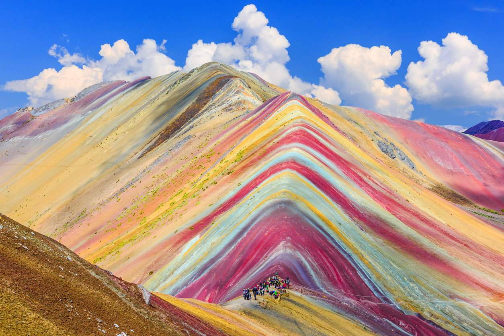
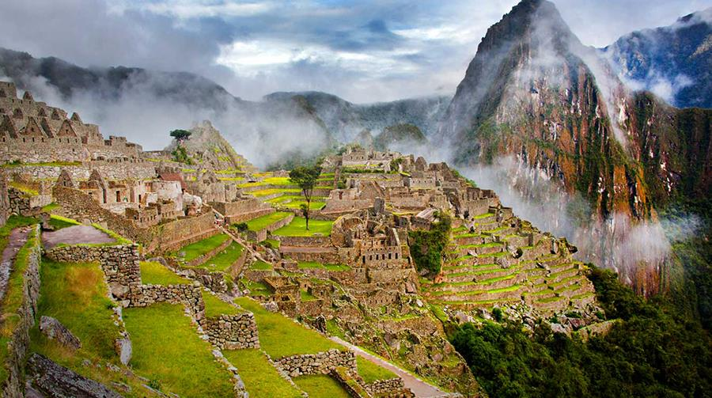
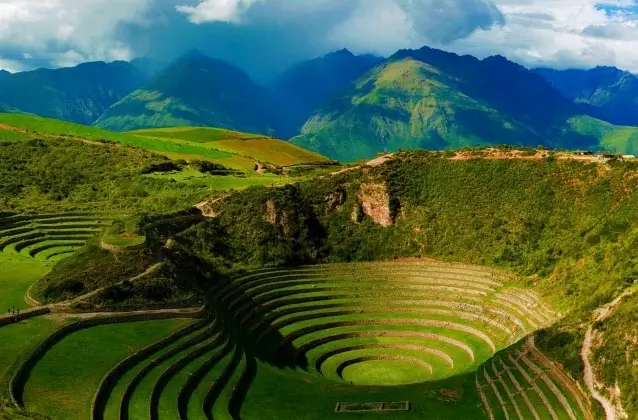
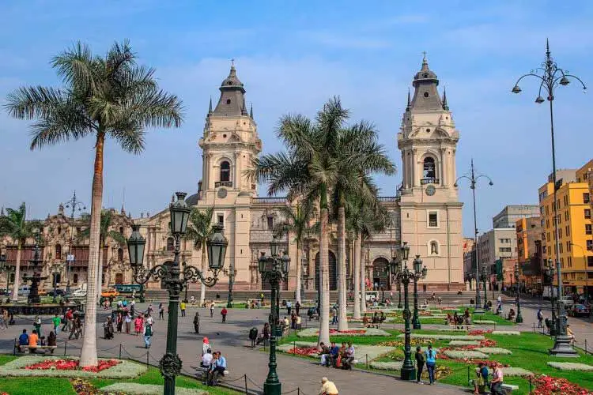
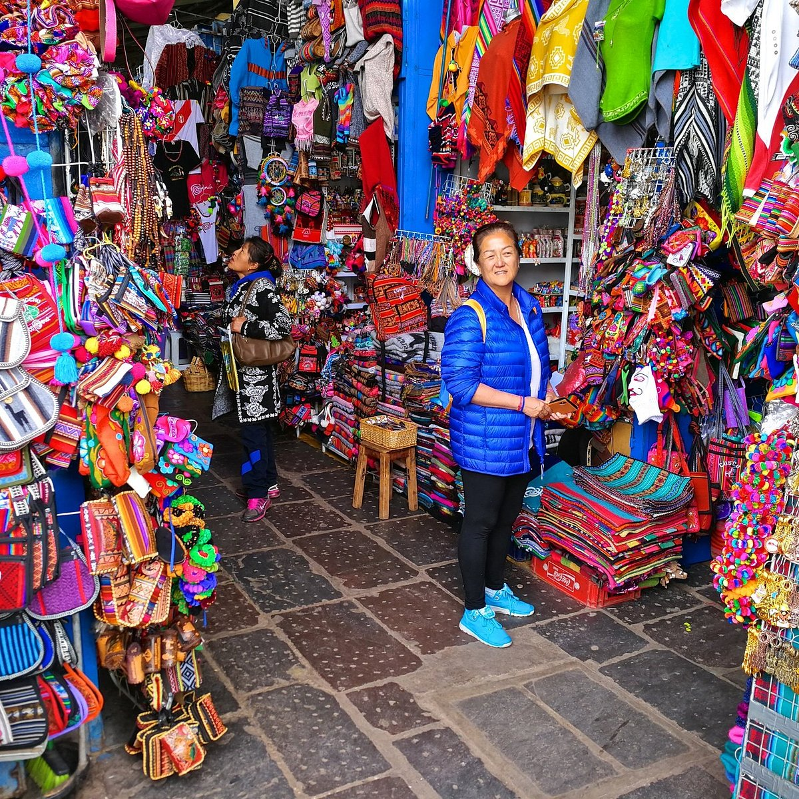

LUGARES A VISITAR

Machu Pichu
Una de las Nuevas Siete Maravillas del Mundo, Machu Picchu es un antiguo sitio inca que ofrece vistas impresionantes y una rica historia.

Montaña de 7 colores
Montaña de 7 colores
Joya natural de los Andes, la Montaña de 7 colores es famosa por sus vibrantes tonalidades, paisajes impresionantes y mistica increible.

Valle Sagrado
Valle Sagrado
Impresionante región andina que alberga antiguos sitios incas, mercados vibrantes y paisajes de ensueño.

Maras, Moray y Chinchero
Maras, Moray y Chinchero
Explora los impresionantes salineras de Maras, los andenes circulares de Moray y el colorido mercado de Chinchero.

Plaza de Armas
Plaza de Armas
El corazón de Cusco, rodeada de impresionantes iglesias coloniales y vibrantes mercados.

Mercado San Pedro
Mercado San Pedro
Un bullicioso mercado local donde puedes encontrar productos frescos, artesanías y comidas típicas.